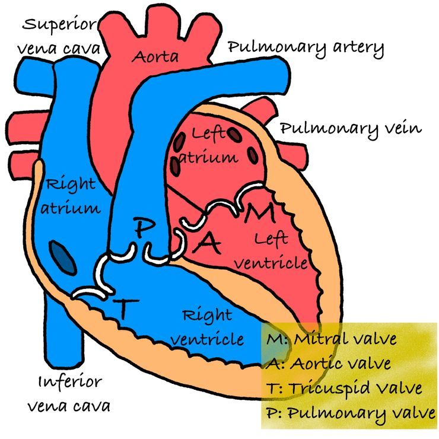
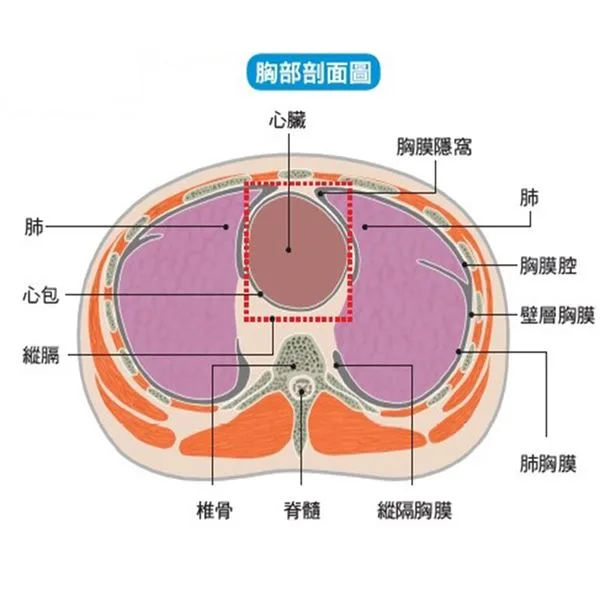
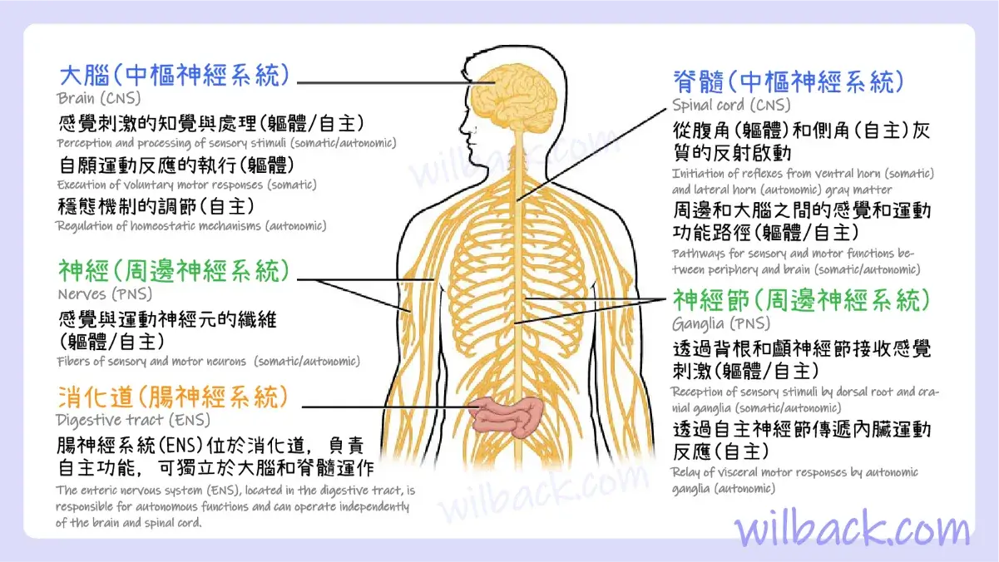

西醫系統總覽
以系統解剖學角度統整主要器官系統

核心功能
泵血維持循環，確保血液在全身流動
心跳
血壓

核心功能
氣體交換，提供氧氣並排出二氧化碳
血氧
肺功能

核心功能
代謝解毒、膽汁生成，維持體內平衡
AST/ALT
膽紅素

核心功能
過濾、電解質與水分平衡，維持體內環境
eGFR
肌酸酐

核心功能
中樞與周邊神經協調運動與感覺
反應時間
協調性

核心功能
激素調節，維持體內各種生理功能
甲狀腺
血糖

骨骼系統
主要功能
- 支撐與保護
- 造血（骨髓）
- 礦物質儲存
206
塊骨骼
360
個關節

肌肉系統
主要功能
- 骨骼肌（隨意運動）
- 平滑肌（內臟功能）
- 心肌（心臟收縮）
600+
塊肌肉
40%
體重占比